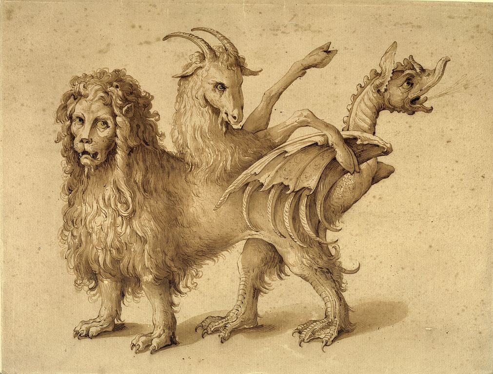
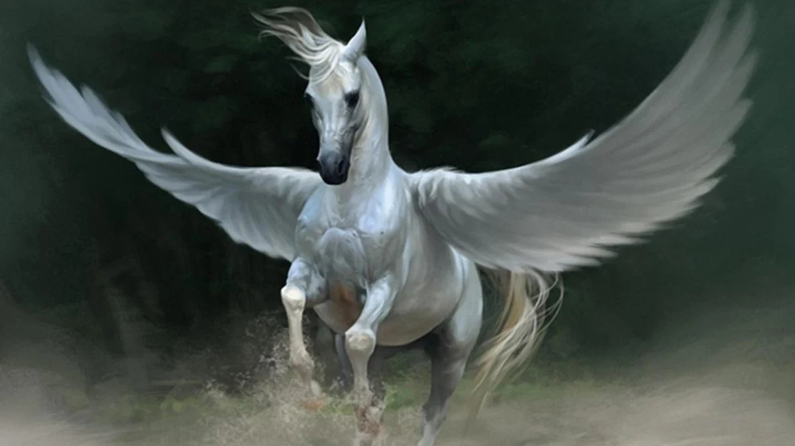

Mitologia Griega.
Conoce a los dioses
Introduccion
La mitología griega es un conjunto de relatos, creencias y tradiciones transmitidas por los antiguos griegos a
lo largo de los siglos. Estos mitos buscaban explicar la creación del mundo, el origen de los dioses y la
naturaleza del universo, además de ofrecer enseñanzas morales y justificar costumbres y rituales. La mitología
se convirtió en una parte fundamental de la identidad cultural griega, influyendo en su arte, literatura,
religión y política.
Los mitos griegos comenzaron como narraciones orales transmitidas de generación en generación. Con el tiempo,
fueron recopilados y registrados en diversas obras literarias, entre las que destacan los poemas épicos de
Homero, "La Ilíada" y "La Odisea", así como "La Teogonía" y "Los Trabajos y los Días" de Hesíodo. Además de
estos textos, las tragedias de Esquilo, Sófocles y Eurípides, así como las obras de historiadores como
Heródoto
y geógrafos como Pausanias, ayudaron a consolidar y difundir la mitología griega a lo largo de los siglos.
Orígenes y evolución de los mitos
La mitología griega tiene raíces en antiguas tradiciones indoeuropeas y comparte similitudes con los mitos de otras civilizaciones mediterráneas y mesopotámicas. En sus inicios, los mitos griegos eran relatos simples que explicaban fenómenos naturales como los rayos, el mar tempestuoso o la sucesión de las estaciones. Con el tiempo, estos relatos se expandieron y complejizaron, dando origen a una estructura mitológica rica en detalles, personajes y conexiones entre dioses, héroes y mortales.Uno de los aspectos más fascinantes de la mitología griega es su evolución a lo largo de los siglos. En sus primeras etapas, los relatos estaban profundamente ligados a las prácticas religiosas y a la adoración de los dioses en templos y santuarios. Sin embargo, con el desarrollo del pensamiento filosófico y el auge de la civilización griega, los mitos comenzaron a reinterpretarse desde un enfoque más racional y simbólico. Filósofos como Platón y Aristóteles debatieron sobre la veracidad de los mitos y su utilidad en la educación moral de los ciudadanos. Posteriormente, los romanos adoptarían y adaptarían muchos de estos mitos dentro de su propia cultura, fusionando elementos griegos con sus propias creencias.
El papel de los dioses y héroes en la sociedad griega
Los dioses desempeñaban un papel central en la vida cotidiana de los griegos. Eran vistos como seres poderosos pero con emociones y defectos humanos. Los griegos les ofrecían sacrificios, oraciones y festivales para ganarse su favor o evitar su ira. Cada ciudad-estado tenía una deidad principal como protectora, siendo Atenea la patrona de Atenas, Apolo de Delfos y Artemisa de Éfeso.Además de los dioses, los héroes desempeñaban un papel fundamental en la mitología griega. Eran figuras semidivinas, descendientes de dioses y mortales, cuyas hazañas y aventuras inspiraban a la sociedad. Historias como las de Heracles, Teseo, Perseo y Aquiles servían como ejemplos de coraje, astucia y sacrificio.
A lo largo del tiempo, la mitología griega influyó en innumerables aspectos de la civilización occidental. Sus relatos han sido fuente de inspiración para la literatura, la escultura, la pintura y el cine. Hoy en día, los mitos griegos siguen siendo estudiados y reinterpretados en la cultura popular, demostrando su impacto perdurable en la humanidad.
Principales Dioses y Diosas
Los dioses griegos eran antropomórficos y poseían características humanas, con virtudes y defectos. Entre los más importantes destacan:

Zeus
Dios del cielo y el trueno, rey del Olimpo. Hijo de Cronos y Rea, lideró la rebelión contra los titanes y estableció su dominio sobre dioses y mortales. Conocido por sus múltiples amoríos, engendró a muchos héroes y dioses. Su símbolo es el rayo, y se le representa como un hombre maduro con barba y un cetro.
Hera
Diosa del matrimonio y la familia, esposa de Zeus. Famosa por su carácter vengativo, perseguía a las amantes de su esposo y a sus hijos ilegítimos. Era protectora de las mujeres casadas y la reina del Olimpo. Su símbolo es el pavo real, y se le representa con una diadema y un cetro.
Poseidon
Dios del mar y los terremotos, hermano de Zeus y Hades. Gobernaba los océanos desde su palacio submarino y podía calmar o desatar tormentas a voluntad. Creó al caballo y tuvo numerosos descendientes, incluyendo al cíclope Polifemo. Su símbolo es el tridente.
Hades
Dios del inframundo y los muertos, hermano mayor de Zeus y Poseidón. Gobernaba el reino de los difuntos y rara vez salía de él. Raptó a Perséfone para convertirla en su esposa, lo que originó el mito de las estaciones. Su casco de invisibilidad le permitía moverse sin ser visto.
Atenea
Diosa de la sabiduría y la estrategia militar. Nació armada de la cabeza de Zeus tras haber sido tragada en el vientre de Metis. Protectora de Atenas y los héroes, apoyó a Odiseo y Perseo. Su símbolo es el búho, y se le representa con la égida y una lanza.
Apolo
Dios del sol, la música, la poesía y la profecía. Hijo de Zeus y Leto, poseía el oráculo de Delfos y guiaba a los humanos con su sabiduría. También era un arquero letal y patrón de las artes. Se le representa con una lira y una corona de laurel.
Artemisa
Diosa de la caza, la virginidad y la naturaleza salvaje. Hermana gemela de Apolo, protegía a los animales y castigaba a quienes los dañaban. Defendía su pureza con ferocidad y ayudaba en los partos. Se le representa con un arco y flechas.
Afrodita
Diosa del amor, la belleza y el deseo. Nació de la espuma del mar tras la castración de Urano o, según otra versión, era hija de Zeus y Dione. Casada con Hefesto, tuvo numerosos amantes, entre ellos Ares. Su símbolo es la paloma, y se le representa con una concha marina.
Ares
Dios de la guerra y la violencia. Hijo de Zeus y Hera, encarnaba la brutalidad del combate y el caos del campo de batalla. Amante de Afrodita, tuvo varios hijos con ella. Se le representa con armadura, casco y una lanza.
Dionisio
Dios del vino, la locura y el éxtasis. Hijo de Zeus y Sémele, fue criado por ninfas tras la muerte de su madre. Introdujo la viticultura y los misterios dionisíacos, promoviendo la alegría y el frenesí. Se le representa con una copa de vino y una corona de hiedra.
Hermes
Dios mensajero, protector de viajeros, comerciantes y ladrones. Hijo de Zeus y Maya, era astuto y veloz, con sandalias aladas que le permitían moverse entre mundos. Inventó la lira y ayudó a héroes como Perseo. Su símbolo es el caduceo.
Hefesto
Dios del fuego, la forja y la metalurgia. Hijo de Hera, aunque algunas versiones dicen que también era hijo de Zeus, Hefesto nació con una deformidad y fue arrojado del Olimpo por su madre.
Criaturas y Seres Mitologicos
Los mitos griegos están llenos de seres fantásticos, como:Minotauro

Conocido por tener el cuerpo de un hombre y la cabeza de un toro. Su nombre significa literalmente “Toro de Minos”, en referencia al rey Minos de Creta.
El Minotauro nació de la unión entre Pasífae, esposa del rey Minos, y un toro blanco enviado por el dios Poseidón. El Minotauro simboliza el lado salvaje e irracional del ser humano, y su historia está cargada de simbolismo sobre el control del caos, el heroísmo y la astucia.
Ciclopes

Gigantes de un solo ojo, forjadores de las armas divinas.
Medusa
Gorgona con serpientes en la cabeza, capaz de petrificar con la mirada.
Quimera
Criatura con cabeza de león, cuerpo de cabra y cola de serpiente.
Hidra de Lerna
Serpiente de múltiples cabezas que se regeneraban al ser cortadas.
Pegaso
Caballo alado nacido de la sangre de Medusa.
Heroes y Leyendas
La mitología griega es una de las más influyentes de la historia, con relatos que explican el origen del mundo, la vida y la naturaleza humana. Basada en un vasto panteón de dioses olímpicos liderados por Zeus, estas historias fueron plasmadas en obras como la Ilíada y la Odisea. Los griegos creían en la intervención de los dioses en los asuntos humanos y en la existencia de criaturas legendarias, héroes épicos y relatos que dieron forma a su cosmovisión.
Mitos y Relatos
La mitología griega es una de las más influyentes de la historia, con relatos que explican el origen del mundo, la vida y la naturaleza humana. Basada en un vasto panteón de dioses olímpicos liderados por Zeus, estas historias fueron plasmadas en obras como la Ilíada y la Odisea. Los griegos creían en la intervención de los dioses en los asuntos humanos y en la existencia de criaturas legendarias, héroes épicos y relatos que dieron forma a su cosmovisión.
Simbolos y Artefactos Sagrados
La mitología griega es una de las más influyentes de la historia, con relatos que explican el origen del mundo, la vida y la naturaleza humana. Basada en un vasto panteón de dioses olímpicos liderados por Zeus, estas historias fueron plasmadas en obras como la Ilíada y la Odisea. Los griegos creían en la intervención de los dioses en los asuntos humanos y en la existencia de criaturas legendarias, héroes épicos y relatos que dieron forma a su cosmovisión.
Lugares Miticos y Cosmología
La mitología griega es una de las más influyentes de la historia, con relatos que explican el origen del mundo, la vida y la naturaleza humana. Basada en un vasto panteón de dioses olímpicos liderados por Zeus, estas historias fueron plasmadas en obras como la Ilíada y la Odisea. Los griegos creían en la intervención de los dioses en los asuntos humanos y en la existencia de criaturas legendarias, héroes épicos y relatos que dieron forma a su cosmovisión.